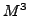

Efficient modeling of multiscale system is a must for numerous subsurface applications such as contaminant flow in aquifers, enhanced oil recovery, power generation in fission reactors, carbon dioxide sequestration in complex geological formations, and fluid flow and heat transfer in geothermal systems. In all these applications, the key complicating factor is that system response is measured at engineering length-scales (meters to kilometers) yet depend crucially on information about microscopic length-scales (e.g. the rock pore geometry at sub-micron length-scales). On one hand, a simulation fully resolving all microscopic details of three-dimensional problems is beyond the capability of modern supercomputers. On the other hand, a naive simulation that does not address the influence of the fine-scales is terribly inaccurate.
In this work we study the simulation of two-phase flows in porous media driven by the well production. The governing equations for this model are the elliptic equation for the reservoir pressure and the hyperbolic equation for the water saturation. Many different model upscaling approaches have been proposed to address this problem. The methods using multiscale basis functions are two-level methods with unnecessary rigid distinction between the resolved and unresolved scales, i.e. fine and coarse scales. This domain decomposition style partitioning is what places the demands on accurate boundary conditions for local problems, because as the coarsening factor increases these artificial internal boundary conditions become increasingly important. Most two-level methods achieve a coarsening factor of approximately 10 in each coordinate direction, while the trends in fine-scale realizations of large reservoirs requires a coarsening factor more than 100.
In M method the multigrid ideas are used to build recursively a problem-dependent multilevel hierarchy of models. Each model preserves important physical properties of the system, such as local mass conservation. In contrast with classical two-level methods that the multilevel hierarchal approach facilitates very large total coarsening factors, such 100 or more. The method combines two subgrid modeling technique. The first technique is the algebraic coarsening developed by Y.Kuznetsov that reduces the degrees of freedom inside a coarse-grid cell. The second is a problem dependent approach to conservative coarsening of velocities on the edges of a coarse-grid cell. These complimentary strategies ensure that the coarse-scale system has the same sparsity structure as the fine-scale system, which naturally leads to a multilevel algorithm.
The mimetic finite difference discretization on the fine scale is a basis of multilevel hierarchy of discrete models. This allow us to handle unstructured polyhedral meshes, including locally refined meshes, and full tensor permeability fields. Due to the algebraic nature of the method it can bee easily adapted to other mixed-type discretizations, such as mixed finite elements method, finite volume method, etc.
A robust and reliable error control is active research area in multiscale modeling. The flexibility of the hierarchical approach allow us to incorporate different adaptive strategies in a very efficient manner and to be closer to the optimal trade-off between accuracy of the method and the computation cost. In this work we present several adaptive techniques that reduce the cost of the M method, including solution-based mesh coarsening and adaptive space and time updates of the multilevel hierarchy of models. Maintenance of the hierarchy of models incurs only a modest computational overhead due to the efficiency of recursive coarsening and adaptive update strategies. Numerical experiments show that the new adaptive strategy allows us to control the error in water saturation. Compared uniform updates in time, the adaptive strategy gives three times more accurate solution for the same computation cost.
The  method was developed and tested in two-dimensions; however, it can be readily extended to polyhedral meshes by leveraging recent developments in mimetic finite difference methods.